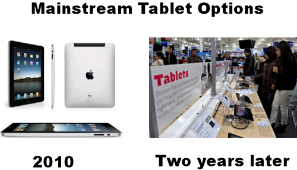

Explaining the popularity of JavaScript in web development.
Technological Evolution
JavaScript is popular in web development in large part due to its ability to keep up with technological change. Technological change has been happening at an ever increasing pace. While people may grumble that their iPhone is obsolete when a new version comes out less than two years later, people are no longer willing to wait for software and web-related updates. Whether something is wrong, broken, or could just use improvement, people expect updates in a matter of hours, days, or weeks, but no longer. Where web development is concerned, JavaScript allows developers to quickly put together updates and new applications as the market demands. This is one of its major strengths.
Strengths
JavaScript has a number of other strengths. It's quick to learn compared to many other languages. It's run client-side, which means that it takes advantage of the user's processor instead of straining the web server with tons of requests to run that script (or scripts). This makes it both quick and easy on the server.
Weaknesses
Despite these strengths, JavaScript still has some weaknesses. Like anything related to technology, it has security issues. Its strength of running client-side (on the user's computer) means that it can be used (via the insertion of malicious code) to manipulate the user's computer. JavaScript is also interpreted differently by different browsers, particularly Internet Explorer. If developers don't take this into consideration then users might find the lack of functionality a turn off to using the entire site.